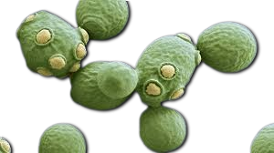
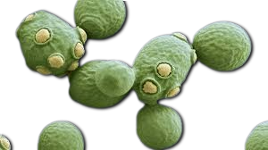

Descripción microbiológica
Saccharomyces cerevisiae, comúnmente conocida como "levadura de cerveza" o "levadura de panadero", es un hongo unicelular de la familia Saccharomycetaceae. Estas células eucariotas ovaladas (5-10 µm de diámetro) se reproducen asexualmente por gemación, formando colonias blanquecinas cremosas en medios sólidos. Presentan pared celular de β-glucanos y manoproteínas, con un genoma compacto de ~12 Mb organizado en 16 cromosomas. Su capacidad para fermentar azúcares (transformándolos en CO₂ y etanol) la ha convertido en el organismo eucariota más estudiado después del humano.
Características distintivas
- Metabolismo: Versátil (aerobio/anaerobio facultativo) con alta tasa glucolítica.
- Reproducción: Gemación asimétrica y esporulación sexual en condiciones estresantes.
- Cepas: Diversidad industrial (vinos, pan, cerveza) con adaptaciones metabólicas específicas.
- Estructura: Orgánulos típicos eucariotas (mitocondrias, retículo endoplásmico).
Historia y distribución
Domesticada hace ~5,000 años, su uso se documenta en antiguas tablillas sumerias y egipcias. Aunque asociada originalmente a uvas y cereales, hoy es ubicua en ambientes ricos en azúcares (frutas, savia de árboles). Su dispersión global está ligada a actividades humanas (comercio, fermentaciones). La cepa de laboratorio S288C (secuenciada en 1996) es referencia para estudios genómicos, mientras cepas industriales como EC1118 dominan la producción vitivinícola.
Hábitats naturales
- Asociaciones: Piel de uvas, flores y exudados de árboles (roble, arce).
- Resistencia: Forma esporas (ascosporas) que sobreviven desecación y frío.
- Competencia: Exuda toxinas (killer factors) para inhibir otras levaduras.
Ciclo de vida y genética
Presenta alternancia entre fases haploides (n) y diploides (2n), controlada por el locus MAT. En estrés nutricional, diploides sufren meiosis produciendo cuatro ascosporas haploides. Su genoma contiene ~6,000 genes, incluidos 5,800 ORFs (Marcos Abiertos de Lectura), con alta conservación en rutas metabólicas clave. El proyecto Yeast 2.0 (2014) sintetizó artificialmente el cromosoma III, demostrando su utilidad en biología sintética.
Mecanismos clave
- Fermentación: Ruta Embden-Meyerhof-Parnas (producción de etanol incluso en aerobiosis a altas concentraciones de glucosa - efecto Crabtree).
- Reparación ADN: Sistemas eficientes de recombinación homóloga (modelo para estudios cancerígenos).
- Señalización: Vía MAP quinasa regulando respuesta a estrés osmótico.
Aplicaciones industriales
| Sector | Uso específico |
|---|---|
| Alimentación | Panificación (producción de CO₂), fermentación alcohólica (cerveza, vino, sake) |
| Biotecnología | Producción de insulina humana, vacunas (hepatitis B), enzimas industriales |
| Bioenergía | Bioetanol de segunda generación (a partir de celulosa) |
Contribuciones científicas
- Premios Nobel: 6 galardones en Fisiología/Medicina y Química usando S. cerevisiae como modelo (incluyendo regulación del ciclo celular y autofagia).
- Herramientas: Desarrollo de técnicas como el two-hybrid system (estudio interacciones proteicas).
- Biología sintética: Primera célula eucariota con cromosoma artificial completo (2014).
Propiedades nutricionales
Fuente rica en proteínas completas (contiene los 9 aminoácidos esenciales), vitaminas del grupo B (especialmente B1, B2 y B9) y minerales (selenio, cromo). La levadura nutricional inactiva (forma desamargada) se usa como suplemento vegano por su contenido en B12 (cuando está fortificada). Su pared celular contiene β-glucanos con efectos inmunomoduladores demostrados en estudios clínicos.
Cultivo y manipulación
- Medios comunes: YPD (extracto de levadura, peptona, dextrosa), agar Sabouraud.
- Condiciones: 30°C óptimas, pH 4-6, tiempo de duplicación ~90 minutos en condiciones ideales.
- Almacenamiento: Criopreservación (-80°C en glicerol 15%) o liofilización.